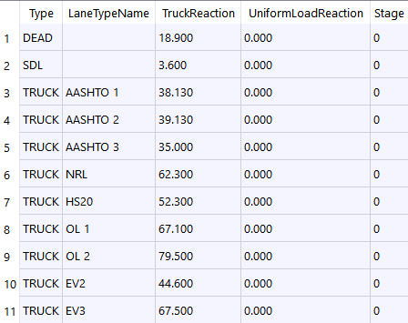

Transverse Reactions
Table tb2DReactions
- PURPOSE
This table is used for entry of reaction loads computed from a logitudinal analysis.
Parameters
tb2DReactions Field
Type
Units
Description
Type
text
[Dead|S_DC|S_DW|Truck] Load Type
LaneTypeName
text
If type=Truck, name for this lane type.
TruckReaction
real
KIP
Reaction from Truck (given without IMPACT; IMPACT will be applied by Bridg)
UniformLoadReaction
real
KIP
Reaction from uniform lane load (given without IMPACT; NO IMPACT will be applied by Bridg)
Stage
int
Stage to apply Dead,Sdead or PS load.
Type
- Enter key word:
DEAD for dead loads.
SDL for superimposed dead loads.
S_DC
S_DW
TRUCK for un-factored truck live load.
LaneTypeName
If reaction type is TRUCK then this name corresponds to a lane type referenced in the 2DTLoadCombDef. ( Transverse Load Combinations )
TruckReaction
Reaction from Truck (given without IMPACT; IMPACT will be applied by Bridg)
UniformLoadReaction
Reaction from uniform lane load (given without IMPACT; NO IMPACT will be applied by Bridg)
Stage
If the load type is DEAD, then enter an option stage for applying the load. If left blank or zero, the last dead load stage will be used.
Example
